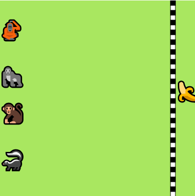
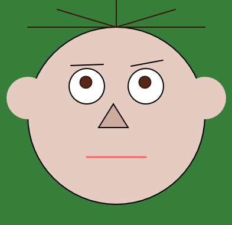
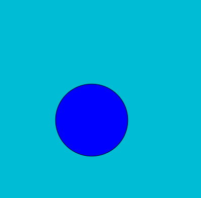

Meus projetos

Corrida da banana: Uma programação de um jogo de corrida
Este projeto é um jogo de corrida interativo, produzido através de aprendizados da Alura, no p5js.

Projeto Monalisa: versão Cebolinha
Este projeto retrata a ilusão de ótica da Monalisa, fazendo os olhos da imagem seguirem o ponteiro do mouse.

Projeto Quente Frio
Este projeto, também do p5.js, simula o jogo Quente Frio.